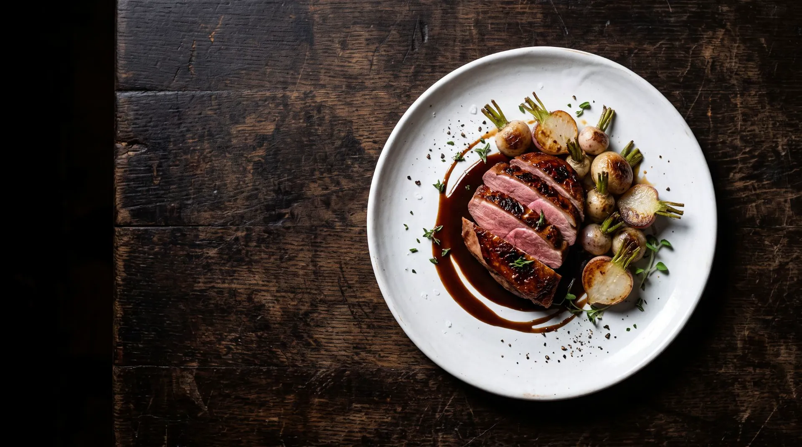
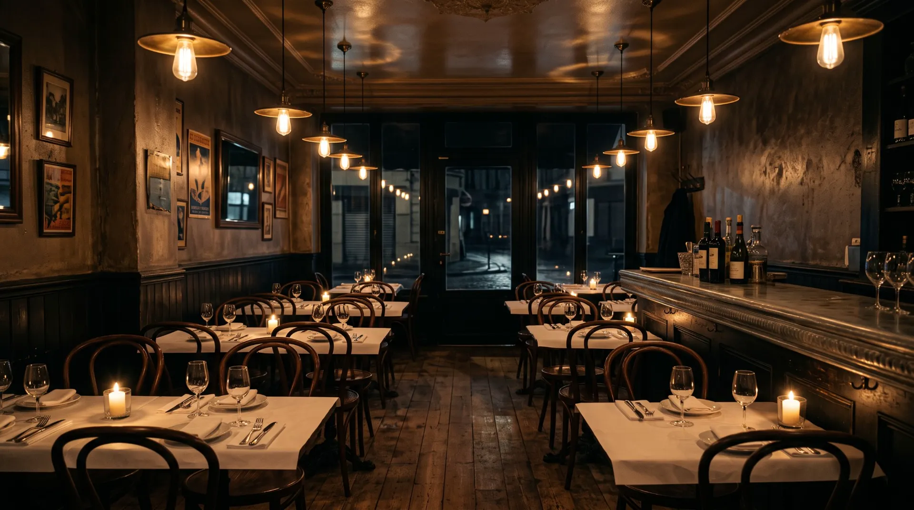
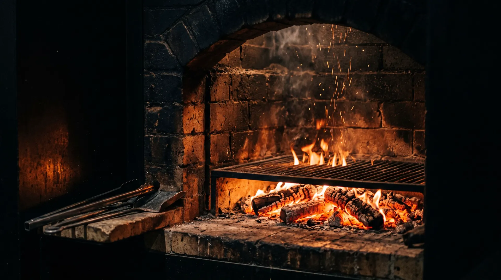

Le plat
Pigeonneau rôti au sarment,
navets glacés au miel de châtaignier
Cuisson longue sur la braise, servi rosé. Le jus est monté au vinaigre de Banyuls, les navets viennent de Charly.
34 €

Lyon 1er · depuis 1978
Au feu de bois, midi et soir, rue des Capucins.
Mardi au samedi
12h00 à 14h00 · 19h00 à 22h00
14 rue des Capucins
69001 Lyon
04 78 42 19 07
Du mardi au samedi
La maison
Loïc Verrier a repris la maison de son père en 2011. Il a gardé le fourneau à bois, la salle en L et l'habitude d'aller au marché Saint-Antoine tous les matins. Le reste a changé.
La carte tient sur une page et se réécrit le mardi, selon ce que la criée et les maraîchers laissent. Il n'y a pas de menu fixe, pas de plat qui reste toute l'année.

La salle se remplit à partir de dix-neuf heures trente. Mieux vaut appeler.
RéserverCette semaine
Le plat
Cuisson longue sur la braise, servi rosé. Le jus est monté au vinaigre de Banyuls, les navets viennent de Charly.
34 €
Entrée
16 €
Dessert
12 €
Menu déjeuner en semaine, entrée, plat et dessert, 26 €.

Le foyer est allumé à dix heures et ne s'éteint qu'à la fermeture. Sarment de vigne et chêne, rien d'autre.
Les producteurs
Les légumes viennent de trois maraîchers de l'ouest lyonnais, la volaille d'un éleveur de la Dombes, le poisson de la criée par le mardi et le vendredi.
Quand un produit manque, le plat saute. C'est le seul inconvénient d'une carte courte, et on l'assume.
On y va pour le pigeonneau depuis six ans. La carte bouge, la cuisson ne bouge jamais.
Le meilleur rapport qualité prix du 1er le midi. Réservez, la salle est petite.
Réservation
Par téléphone pendant le service, ou par le formulaire à toute heure. Nous confirmons sous deux heures.
Ou appelez le 04 78 42 19 07